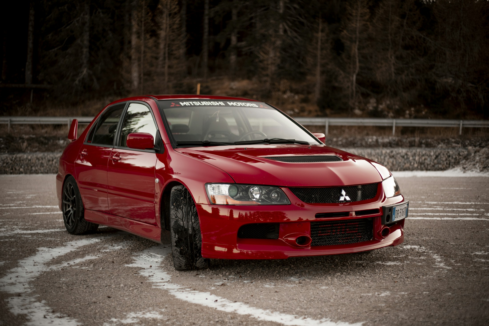

NE SPUI CE AI OBSERVAT.
Marca, modelul și simptomul. Un zgomot, un martor, un miros. Ne ajută să știm de unde începem.
Mecanică, diagnoză și întreținere auto în Popești-Leordeni. Îți explicăm ce are mașina, ce e urgent și ce poate aștepta. Toate mărcile, cu experiență Mitsubishi.
Un zgomot nou, un martor aprins, o revizie care se apropie? Întotdeauna începem la fel: ne spui ce ai observat, verificăm și îți explicăm. Abia apoi decizi tu.

EXPERIENȚĂ MITSUBISHIProprietarii de Mitsubishi ne recomandă de la unul la altul, pe forumuri și în grupuri, de ani de zile.
Lancer, Outlander, ASX sau Pajero: știm ce probleme apar de obicei la fiecare și unde să ne uităm prima dată.
Vezi service-ul Mitsubishi ↗Marca, modelul și simptomul. Un zgomot, un martor, un miros. Ne ajută să știm de unde începem.
Îți propunem o zi și o oră și clarificăm detaliile necesare pentru verificare.
Afli ce am găsit, ce e urgent, ce poate aștepta și care sunt pașii următori.
Îți arătăm ce s-a făcut și, unde se poate, piesele schimbate.
O echipă care lucrează cu mașini și vorbește cu oamenii pe înțelesul lor. Ne spui ce ai observat, iar noi te ajutăm să înțelegi următorul pas.
Pentru că vrem ca cricul din portbagaj să rămână doar un accesoriu. Reparăm mașina ca să nu te lase pe drum.
Un telefon sau un mesaj e suficient ca să știi ce urmează. Revizie, verificare sau doar o întrebare: răspundem la toate.
0724 138 202 ↗Vineri · 09:00–17:00
Sâmbătă–Duminică · Închis
Spune-ne marca, modelul și ce ai observat. În varianta finală, echipa te contactează pentru detalii și disponibilitate.
Formular demonstrativ. Datele nu se trimit și nu se salvează.